소방설비산업기사(기계) (2005-03-06 기출문제)
1과목: 소방원론
1. 정전기 발생을 억제하기 위한 조치로서 적합하지 않은 것은 ?
- 공기를 이온화시킨다.
- 상대습도를 70%이상이 되도록 한다.
- 가솔린등을 파이프라인을 통하여 수송시 10m/sec이하의 유속으로 한다.
- 주유시 전도성를 갖는 철사등을 호스에 넣고 끝을 접지시킨다.
(정답률: 60%)

2. 소화의 원리에서 소화형태로 볼 수 없는 것은?
- 발열소화
- 화학소화(부촉매효과)
- 희석소화
- 제거소화
(정답률: 100%)
3. 다음 중 물속에 저장해야 하는 것으로 옳게 표현 한 것은?
- 나트륨, 칼륨
- 칼륨, 이황화탄소
- 이황화탄소, 황린
- 황린, 나트륨
(정답률: 74%)
4. 전기화재가 발생하였을 때 적응시키기 위한 방법이 아닌 것은?
- 무상 주수
- 하론소화약제 방사
- 봉상 주수
- 분말소화설비
(정답률: 78%)
5. 액체의 발화 위험성의 기준이 되는 것은?
- 인화점
- 착화점
- 비등점
- 연소범위
(정답률: 47%)
6. 전기화재의 원인으로 볼 수 없는 것은?
- 승압에 의한 발화
- 과전류에 의한 발화
- 누전에 의한 발화
- 단락에 의한 발화
(정답률: 91%)
7. 미생물의 발열에 의한 자연발화 형태로 옳은 것은?
- 셀롤로이드
- 건성유
- 퇴비
- 활성탄
(정답률: 30%)
8. 피난대책의 일반적 원칙이 아닌 것은?
- 2방향 이상의 피난계획을 세운다.
- 피난통로는 간단명료하여야 한다.
- 피난설비는 고정적인 시설에 의하고, 피난기구는 피난이 늦어진 소수의 사람들에 대한 예외적인 보조수단이다.
- 피난의 수단으로는 원시적인 방법보다는 최신의 운송설비를 이용하는 것이 원칙이다.
(정답률: 82%)
9. 준불연재료란?
- 철근콘크리트조, 연와조 기타 이와 유사한 성능의 재료
- 철망모르터로 바름두께가 2cm 이상인것
- 불에 잘 타지 아니하는 성능을 가진 재료
- 불연재료에 준하는 방화성능을 가진 재료
(정답률: 28%)
10. 위험물 제조소의 안전장치의 종류로서 적합하지 않은 것은?
- 감압밸브
- 안전밸브
- 자동적으로 압력을 승압시키는 장치
- 릴리프밸브(Relief valve)
(정답률: 53%)
11. 연소시 부식성 가스를 가장 많이 방출하는 물질은?
- 폴리에칠렌
- 폴리우레탄
- 폴리스티텐
- 폴리염화비닐
(정답률: 80%)
12. 다음 소화제 중에서 변전실 화재시 적당하지 않은 것은?
- 이산화탄소
- 분말
- 할론
- 포
(정답률: 40%)
13. 50 BTU의 열량은 몇 cal 에 해당하는가?
- 12600
- 15000
- 22600
- 25000
(정답률: 50%)
14. 연기속에 포함된 유해물질(gas)의 독성 중 인체에 가장 위험한 것은?
- 이산화탄소
- 일산화탄소
- 염소
- 포스겐
(정답률: 67%)
15. 피난에 유효한 건축계획으로서 거리가 먼 것은 ?
- 2 방향 피난로 확보
- 에스컬레이트 설치
- 내장재 불연화
- 안전구획의 확보
(정답률: 88%)
16. 소방법의 위험물 성질에 대한 설명 중 틀린 것은 ?
- 1류위험물: 강산화성 물질
- 2류위험물: 상온에서 기체상으로 타기쉬운 물질
- 3류위험물: 금수성물질
- 4류위험물: 가연성. 인화성 액체
(정답률: 34%)
17. 방화상 유효한 구획 중 일정규모 이상이면 건축물에 적용되는 방화구획을 하여야 한다. 연소확대 방지를 위한 방화 구획의 종류가 아닌 것은?
- 층 또는 면적별 구획
- 승강기의 승강로 구획
- 위험용도별 구획
- 수용인원 단위별 구획
(정답률: 67%)
18. 자신이 연소하지 않고 다른 가연성 물질이 연소할 수 있도록 도와주는 가스는?
- N2
- O2
- Ar
- CO2
(정답률: 75%)
19. 가연물질의 조건으로 옳지 않은 것은?
- 산화하기 쉽고, 산소와 결합시 발열량이 커야 한다.
- 연소반응을 일으키는 활성화 에너지가 커야 한다.
- 열의 축적이 용이하여야 한다.
- 연쇄반응을 일으키기 쉬워야 한다.
(정답률: 60%)
20. 건축물의 구조내력상 주요한 부분이 아닌 것은?
- 보
- 지붕틀
- 주계단
- 간벽
(정답률: 87%)
2과목: 소방유체역학
21. 실제표면에 대한 복사를 연구하는 것은 매우 어려우므로 이상적인 표면인 흑체의 표면을 도입하는 것이 편리하다. 다음 흑체를 설명한 것 중 잘못된 것은?
- 흑체는 방향, 파장의 길이에 관계없이 모든 에너지를 흡수 또는 방사한다.
- 흑체에서 방출된 총복사는 파장과 온도만의 함수이고 방향과는 관계없다.
- 일정한 온도와 파장에서 흑체보다 더 많은 에너지를 방출하는 표면은 없다.
- 흑체는 산란방사체이므로 파장과 관계없이 연속적으로 변한다.
(정답률: 13%)
22. 부차적손실이 H =
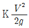
인 관의 상당길이 Le는? (단, d는 관지름, f는 관마찰계수, K는 부차손실계수)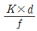
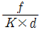
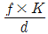
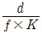
(정답률: 73%)
23. 그림과 같이 수조차의 탱크 측벽에 지름이 25 cm 인 노즐을 달아 깊이 h=3 m 만큼 물을 실었다. 차가 받는 추력 F는 몇 kN 인가 ?(단, 노면과의 마찰은 무시한다.)
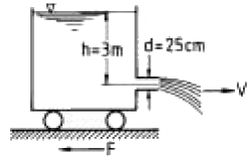
- 2.89
- 5.21
- 1.79
- 4.56
(정답률: 50%)
24. 유량을 측정할 수 없는 것은?
- 오리피스(orifice)
- 마노메타(manometer)
- 위어(weir)
- 로타메타(rotameter)
(정답률: 36%)
25. 온도가 45℃인 CO2가스 2.3 kg이 체적 0.283 m3 인 용기에 가득차 있다. 이 가스의 압력은 몇 kPa 인가? (단, 이산화탄소의 가스정수는 0.1889 kJ/kg.K이다.)
- 797
- 635
- 536
- 488
(정답률: 54%)
26. 이산화탄소 가스를 소화약제 저장용기에 액화 저장하려고 할 때 가장 좋은 방법은?
- 임계온도 이하로 냉각시킨 후 임계압력 이하로 압축한다.
- 단열시킨 후 임계압력 이상으로 압축한다.
- 단열시킨 후 임계압력 이하로 압축한다.
- 임계온도 이하로 냉각시킨 후 임계압력 이상으로 압축한다.
(정답률: 19%)
27. NPSH(유효흡입양정)에 관한 설명 중 잘못된 것은?
- NPSHav(이용가능한 유효흡입양정)은 작을수록 같은 조건에서 공동현상이 일어날 가능성이 커진다.
- NPSHre(필요한 유효흡입양정)은 NPSHav보다 커야 공동현상이 발생되지 않는다.
- NPSHav는 포화 증기압이 커지면 점차 작아진다.
- 물의 온도가 올라가면 NPSHav가 작아져서 공동현상의 발생가능성이 커진다.
(정답률: 28%)
28. 피에조미터는 무엇을 측정할 때 사용되는가?
- 유동하고 있는 유체의 속도
- 교란되지 않은 유체의 정압
- 정지하고 있는 유체의 질량
- 전압력
(정답률: 17%)
29. 소화펌프에서 발생할 수 있는 케비테이션(Cavitation) 현상의 방지대책으로 적절하지 못한 것은?
- 펌프의 설치 높이를 될 수 있는대로 낮추어 흡입양정을 짧게 한다.
- 펌프의 회전속도를 낮추어 흡입 비교 회전도를 크게 한다.
- 두 대 이상의 펌프를 사용한다.
- 양흡입펌프를 사용한다.
(정답률: 70%)
30. 그림에서 물이 들어 있는 탱크 밑의 ②부분에 작은 구멍이 뚫려 있을 때 이 구멍으로부터 흘러나오는 물의 속도는? (단, 물의 자유표면 ① 및 구멍 ②에서의 압력을 P1,P2라 하고 작은 구멍으로부터 표면까지의 높이를 h라고 한다. 또 구멍은 작고 정상류로 흐른다.)(문제오류로 복원중입니다. 정확한 보기의 내용을 아시는 분께서는 오류신고를 통하여 내용 작성 부탁드립니다. 정답은 4번입니다.)
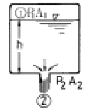
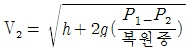
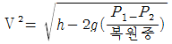
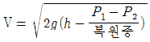
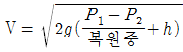
(정답률: 65%)
31. 프로판 가스 44g을 공기중에 완전연소 시킬 때 약 몇 L의 공기가 필요한가? ( 단, 가연가스를 이상기체로 보며, 공기는 질소 80%와 산소 20%로 구성되어 있다.)
- 112
- 224
- 448
- 560
(정답률: 9%)
32. 800 K의 고온열원과 400 K의 저온열원 사이에서 작동하는 Carnot 사이클에 공급하는 열량이 사이클 당 400 kJ이라 할 때 1 사이클 당 외부에 하는 일은 얼마인가 ?
- 100 kJ
- 200 kJ
- 300 kJ
- 400 kJ
(정답률: 37%)
33. 분말소화약제 중 A,B,C급 화재에 적응성이 있는 약제는?
- Na2CO3
- KHCO3
- NH4H2PO4
- NaHCO3
(정답률: 74%)
34. 다음 중 레이놀즈수에 대한 설명으로 옳은 것은?
- 점성과 비점성의 관계
- 압축성과 비압축성의 관계
- 층류와 난류의 관계
- 정상류와 비정상류의 관계
(정답률: 23%)
35. 다음 중 포 소화약제에 대한 설명으로 맞는 것은?
- 포 소화약제의 주된 소화효과는 질식과 냉각이다.
- 포 소화약제는 모든 화재에 효과가 있다.
- 포 소화약제의 사용온도는 제한이 없다.
- 포 소화약제는 저장 기간이 영구적이다.
(정답률: 77%)
36. 지름이 10cm인 원관에서 실제유체가 층류로 흐를 수 있는 임계 레이놀즈수를 2100으로 할 때 층류로 흐를 수 있는 최대 평균유속은 몇 m/s 인가? (단, 관에는 동점성계수 ν=1.8x10-6 m2/s인 물이 흐른다)
- 3.78x10-1
- 3.78x10-2
- 2.46x10-1
- 2.46x10-2
(정답률: 84%)
37. 그림과 같은 사이펀(Siphon)에서 흐를 수 있는 유량은 약몇 m3/min 인가 ?(단, 관로손실은 무시한다.)
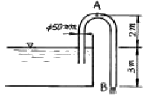
- 0.015
- 0.903
- 15
- 60
(정답률: 12%)
38. 직경이 40 mm인 비누방울에서 내부 초과 압력이 30 N/m2 일 때 비누방울의 표면장력은 몇 N/m 인가?
- 0.15
- 0.3
- 0.5
- 0.6
(정답률: 59%)
39. 그림과 같은 액주계에서 원 중심의 압력은 계기압력으로 몇 Pa 인가?
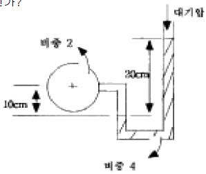
- 3900
- 5880
- 7850
- 9800
(정답률: 72%)
40. 비점성 유체란 ?
- 실제 유체를 뜻한다.
- 전단응력이 존재하는 유체흐름을 뜻한다.
- 유체유동시 마찰저항이 존재하는 유체이다.
- 유체유동시 마찰저항이 유발되지 않는 이상적인 유체를 말한다.
(정답률: 80%)
3과목: 소방관계법규
41. 차고·주차용도로 사용하는 건축물 중 건축허가 등의 동의를 받아야 하는 최소 면적으로 맞는 것은 ?
- 바닥면적 200m2 이상
- 바닥면적 300m2 이상
- 바닥면적 400m2 이상
- 바닥면적 600m2 이상
(정답률: 47%)
42. 다음 중 소화활동설비에 해당하는 것은 ?
- 옥내소화전설비
- 무선통신보조설비
- 통합감시시설
- 방열복
(정답률: 50%)
43. 다음 중 화재경계지구의 지정권자는?
- 시·도지사
- 소방본부장
- 소방서장
- 경찰서장
(정답률: 75%)
44. 다음 중 하자보수보증 기간이 3년이 아닌 것은?
- 자동식 소화기
- 간이스프링클러설비
- 무선통신 보조설비
- 자동화재탐지설비
(정답률: 100%)
45. 특정소방대상물의 규모에 관계없이 물분무등 소화설비를 적용할 대상인 것은?
- 관망탑
- 항공관제탑
- 항공기격납고
- 방송용 송수신탑
(정답률: 84%)
46. 소화난이도등급Ⅰ의 옥내탱크저장소에서 유황만을 저장· 취급 할 경우 설치 가능한 소화설비는?
- 물분무소화설비
- 스프링클러설비
- 포소화설비
- 옥내소화전설비
(정답률: 19%)
47. 소화난이도등급Ⅲ의 지하탱크저장소에 설치하여야 할 소화 설비는?
- 대형수동식소화기 1개 이상
- 대형수동식소화기 2개 이상
- 능력단위의 수치가 3단위 이상인 소형 수동식소화기 2개 이상
- 능력단위의 수치가 3단위 이상인 소형 수동식소화기 3개 이상
(정답률: 34%)
48. 소방용수 시설용 소방용수표지의 설치기준으로 틀린 것은?
- 시·도지사가 설치한다.
- 문자는 청색, 내측 바탕은 백색, 외측 바탕은 적색으로 하고 반사도료를 사용할 것
- 맨홀 뚜껑부근에는 황색반사도료로 폭 15cm 의 선을 그 둘레를 따라 칠할 것
- 지하에 설치하는 소화전 또는 저수조의 경우 맨홀뚜껑은 지름 648mm 이상의 것으로 하되, 그 뚜껑에는 소화전·주차금지 또는 저수조 주차금지의 표시를 할 것
(정답률: 24%)
49. 위험물제조소 등에 옥내소화전설비를 설치하려 한다. 가장 많이 설치되는 층의 옥내소화전의 갯수가 6개일 경우 필요한 수원의 수량은 얼마 이상이어야 하는가?
- 13m3 이상
- 15.6m3 이상
- 39m3 이상
- 46.8m3 이상
(정답률: 0%)
50. 다음 용어의 정의에 설명 중 바르지 못한 것은 ?
- 피난층이란 곧바로 지상으로 갈 수는 없지만 출입구가 있는 층을 의미한다
- 비상구란 화재발생시 지상 또는 안전한 장소로 피난할 수 있는 가로 75cm, 세로 150cm 이상 크기의 출입구를 의미한다.
- 무창층이란 개구부의 합계의 면적이 당해 층의 바닥면적의 30분의1 이하가 되는 층을 의미한다
- 실내장식물이란 건축물 내부의 미관 또는 장식을 위하여 천장 또는 벽에 설치하는 것으로서 가구류ㆍ집기류를 제외한다.
(정답률: 10%)
51. 국가가 소방장비의 구입 등 시얇도의 소방업무에 필요한 경비의 일부를 보조하는 국고보조의 대상이 아닌 것은?
- 소방의(소방복장)
- 소방용 헬리콥터
- 소방전용통신설비
- 소방관서용 청사
(정답률: 42%)
52. 물분무등소화설비를 설치하여야 하는 차고·주차장에 어느 설비를 화재안전기준에 적합하게 설치한 경우 물분무등소화설비를 면제하는가?
- 옥내소화전설비
- 스프링클러설비
- 간이스프링클러설비
- 청정소화약제소화설비
(정답률: 71%)
53. 국제구조대에 반별 종류에 해당하지 않는 것은?
- 구조반
- 후송반
- 시설관리반
- 안전평가반
(정답률: 15%)
54. 소방시설착공신고의 변경이 있는 경우 변경일로부터 14 일 이내에 누구에게 신고하여야 하나?
- 시·도지사
- 행정자치부장관
- 소방방재청장
- 소방서장 또는 소방본부장
(정답률: 70%)
55. 방화관리대상물의 방화관리자로 선임된 자가 실시하여야 할 업무가 아닌 것은?
- 소방계획의 작성
- 자위소방대의 조직
- 소방시설 교육
- 소방훈련 및 교육
(정답률: 8%)
56. 건축허가 등의 동의요구 시 동의요구서에 첨부하여야 할 서류가 아닌 것은?
- 건축허가 신청서 및 건축허가서
- 설계도서 및 소방시설 설치계획표
- 소방시설설계업 등록증
- 소방시설공사업 등록증
(정답률: 20%)
57. 방염성능에 대한 기준 중 틀린 것은?
- 버너의 불꽃을 제거한 때부터 불꽃을 올리며 연소하는 상태가 그칠 때까지 시간은 30초 이내
- 탄화한 면적은 50cm2 이내, 탄화한 길이는 20cm 이내
- 불꽃에 의하여 완전히 녹을 때까지 불꽃의 접촉횟수는 3회 이상
- 발연량을 측정하는 경우 최대연기밀도는 400이하가 될 것
(정답률: 53%)
58. 화재경계지구안의 관계인에 대하여 소방상 필요한 소방 훈련은 연 몇 회 이상 실시하여야 하는가?
- 1회
- 2회
- 3회
- 4회
(정답률: 32%)
59. 제4류 위험물로서 제1석유류인 아세톤 지정수량은 몇 리터인가?
- 100리터
- 200리터
- 300리터
- 400리터
(정답률: 62%)
60. 소방기본법상 벌칙으로 5년 이하의 징역 또는 3000만원이하의 벌금에 해당하지 않는 것은?
- 소방자동차의 출동을 방해한 자
- 강제처분에 방해하거나 따르지 아니한 자
- 화재등 현장에서 사람을 구출하거나 불을 끄거나 불이 번지지 아니하도록 하는 일을 방해한 자
- 정당한 사유없이 소방용수시설의 효용을 해하거나 방해한 자
(정답률: 45%)
4과목: 소방기계시설의 구조 및 원리
61. 연결송수관 설비의 가압송수장치 펌프의 양정은 최상층에 설치된 노즐선단의 압력이 몇 kgf/㎝2이상이 되어야 하는 가?
- 1.7
- 2.5
- 3.5
- 4.5
(정답률: 13%)
62. 분말 소화설비의 배관 분기법 및 배관경에 대해서 가장 옳지 않은 것은?
- 배관은 되도록 굵게한다.
- 배관을 분기할때는 T로 등분하에 흐름이 원활하게 흐르는 구조이어야 한다.
- 유속이 느리면 가스와 소화약제가 분리한다.
- 배관의 분기는 엘보에서 관경의 20배 이상 떨어진 곳에서 분기한다.
(정답률: 50%)
63. 스프링클러설비에서 배관의 입구압력은 3kgf/cm2, 배관의 내경은 65mm, 길이 30m, 유량이 600ℓ/min일 때 배관출구의 압력은? (단, 배관의 조도는 100이다.)
- 0.756 kgf/cm2
- 1.244 kgf/cm2
- 2.244 kgf/cm2
- 2.756 kgf/cm2
(정답률: 16%)
64. 폐쇄형 스프링클러 헤드에 대한 설명으로 틀린 것은?
- 방수구에서 유출되는 물을 세분시키는 것은 디프렉타이다.
- 표시온도는 헤드가 작동하는 온도로 헤드에 표시되어 있다.
- 상향식 전용헤드는 하향식으로도 사용가능하다.
- 헤드를 조립할 때 이미 설계된 하중을 설계하중이라 한다.
(정답률: 46%)
65. 소방법에 적합하게 옥외소화전이 설치되어 있을 경우 전용가압송수장치의 최저 토출량(ℓ/min)과 수원의 최저 확보량(m3)은?
- 350ℓ/min, 7m3
- 350ℓ/min, 14m3
- 700ℓ/min, 7m3
- 700ℓ/min, 14m3
(정답률: 32%)
66. 그림과 같이 각 파이프의 일단을 고정하고, 다른 일단에 인장하중 400kgf를 작용시킬 경우, 연결 볼트 B 및 C는 각각 몇kgf 전단력이 작용하는가?
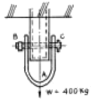
- 400kgf
- 300kgf
- 200kgf
- 100kgf
(정답률: 18%)
67. 제연설비의 풍도가 400mm x 200mm으로 설치되어 있다. 이 풍도 강판의 최소 두께는?
- 0.5mm 이상
- 0.6mm 이상
- 0.8mm 이상
- 1.0mm 이상
(정답률: 59%)
68. 일반적인 산알카리 소화기의 약제방출 압력원에 대한 설명으로 옳은 것은?
- 산과 알카리의 화학반응에 의해 생성된 CO2의 압력이다.
- 소화기 내부의 압축 질소가스 압력이다.
- 소화기 내부의 이산화탄소 충전압력이다.
- 수동펌프를 주로 이용하고 있다.
(정답률: 39%)
69. 연결 송수관설비가 설치되는 아파트에 방수기구함의 사용 범위에서 제외될 수 있는 층은?
- 옥내소화전함이 있는 층
- 아파트 2층
- 최상층
- 10층 이하층
(정답률: 46%)
70. 피난로의 급기가압에 의한 제연방식에서 예상되는 문제점과 거리가 먼 것은?
- 전실등의 문이 열려져 있으면 가압제연이 곤란하다.
- 누설된 공기가 화재실로 인입되면 화세가 거세 진다.
- 공기가 누설될 수 있는 실의 틈새 등의 산정에 변수가 많으며, 계산된 면적도 실제 상황과의 차이를 예상할 수 있다.
- 급기가압하는 공기량이 지나치게 많아 설비비 및 유 지비가 과다하다.
(정답률: 48%)
71. 습식 스프링클러 설비에 사용하지 않는 기기는?
- 리터딩 챔버
- 알람 밸브
- 프리액션 밸브
- 압력 스위치
(정답률: 12%)
72. 청정소화약제 중에서 HCFC의 혼합물로서 구성성분은 HCFC-123(4.75%), HCFC-22(82%), HCFC-124(9.5%), C10H16(3.75%)로 이루어진 것은 무엇인가?
- NAFS-Ⅲ
- FM-200
- FE-36
- Inergen
(정답률: 25%)
73. 이산화탄소 소화설비의 약제 저장용기는 고압식 내압시험에 있어서 얼마 이상의 내압시험에 합격하여야 하는가?
- 100[kgf/cm2] 이상
- 50[kgf/cm2] 이상
- 250[kgf/cm2] 이상
- 내압시험을 받을 필요는 없다.
(정답률: 38%)
74. 차고 또는 주차장의 소방대상물에 물분무 소화설비를 설치할 경우에 단위 면적(m2)당 방사량은 ℓ/min로 몇분 인가?
- 10, 20분
- 20, 20분
- 10, 30분
- 20, 30분
(정답률: 77%)
75. 소화용수 설비의 용량이 100m3 이상의 것에는 채수구를 몇 개 설치해야 하는가?
- 1개
- 2개
- 3개
- 4개
(정답률: 34%)
76. 강관 배관의 절단기가 아닌 것은?
- 쇠톱
- 리머
- 톱반(Sawing Machine)
- 파이프 커터
(정답률: 72%)
77. 소화펌프의 성능시험 방법 및 배관에 대한 설명으로 맞는 것은?
- 펌프의 성능은 체절운전시 정격 토출압력의 150%를 초과하지 아니하여야 할것
- 정격 토출량의 150%로 운전시 정격 토출압력의 65% 이상이어야 할것
- 성능 시험배관은 펌프의 토출측에 설치된 개폐밸브 이후에서 분기할 것
- 유량 측정장치는 펌프의 정격 토출량의 165%까지 측정할 수 있는 성능이 있을 것
(정답률: 25%)
78. 전자부품 생산공장에 어느 소화기를 비치하면 제일 좋은가?
- 포 소화기
- 이산화탄소 소화기
- 분말 소화기
- 강화액 소화기
(정답률: 73%)
79. 포 소화설비의 기동장치에서 폐쇄형 스프링클러 헤드를 사용할 경우에 헤드의 표시온도는 몇℃ 미만 인가?
- 162
- 121
- 79
- 64
(정답률: 47%)
80. 휘발유를 저장하는 고정지붕식, 옥외탱크에 설치하는 포소화설비에 포를 방출하는 기기는?
- 폼워터 스프링클러 헤드
- 폼워터 스프레이 헤드
- 폼헤드
- 폼챔버
(정답률: 20%)